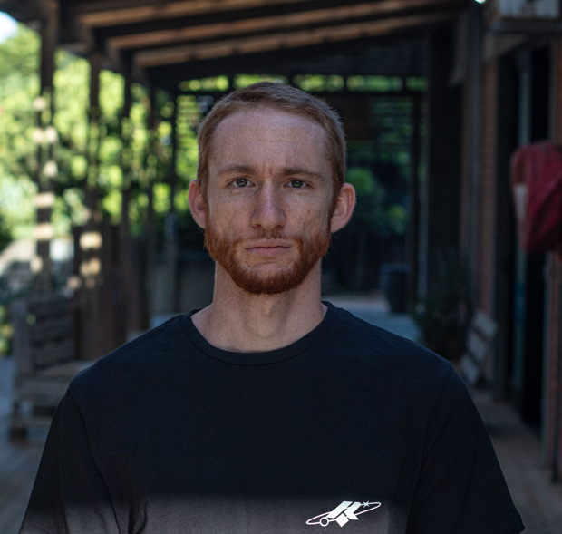

Devon Hibbert | WDD 130
Hello! My name is Devon Hibbert and I am from Port Elizabeth, South Africa. I enjoy skatebaording as a hobby. I have been skating for 16 years
Hello! My name is Devon Hibbert and I am from Port Elizabeth, South Africa. I enjoy skatebaording as a hobby. I have been skating for 16 years